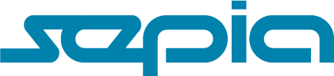

INNOVACIÓN
TECNOLOGÍA
CONSERVACIÓN
Contribuimos en el desarrollo de investigaciones e inspecciones submarinas mediante el uso de tecnología tipo ROV, bajo la supervisión de un equipo de profesionales altamente capacitados.
¿QUIENES SOMOS?
SEPIA ofrece alquiler de Vehículos Subacuáticos de Operación Remota (ROV) para estudios en ecosistemas subacuáticos. Esto beneficia a centros de investigación, empresas públicas y privadas, así como a entidades gubernamentales. Su objetivo es caracterizar, comprender y estudiar tales ecosistemas, optimizando la logística, reduciendo costos y aumentando la eficiencia de la investigación bajo el agua y la recolección de datos.
"Algunos sueñan con ir a las estrellas, nosotros soñamos con ir al fondo del mar"
BENEFICIOS
Reducción de costos logísticos, operativos y de contratación, facilitando la movilidad del equipo por mar, tierra y aire con caja PELICAN.
Operable desde cualquier embarcación.
Capacidad para operar las 24 horas gracias a la iluminación integrada de nuestros equipos con sistemas de 1500 o 18000 lúmenes.
Mayor tiempo de inmersión e investigación en profundidades mayores a 40 metros en comparación con técnicas convencionales.
Rápida identificación de ecosistemas y estructuras sumergidas para una evaluación eficiente en aguas saladas y dulces.
VENTAJAS
Nuestros ROVs permiten una exploración subacuática con menor logística. Con dimensiones de 35x35x50 cm y un peso de 25 kg, son fácilmente transportables, lo que permite que SEPIA se desplace a cualquier lugar, agilizando y optimizando los procesos de investigación.
Además, nuestro equipo se despliega de manera satisfactoria y efectiva en una amplia gama de embarcaciones, desde grandes barcos hasta pequeñas lanchas, para llevar a cabo investigaciones o actividades de reconocimiento marino.